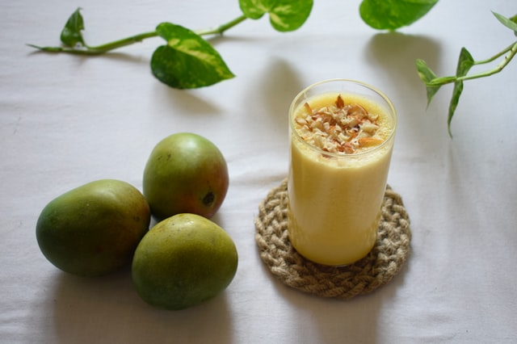

With a climate as varied and extreme as India, the people require a myriad of options to keep their thirst appropriately quenched according to the weather conditions, varying from steaming hot drinks during winters to frosty cold drinks in summers. Different regions in the country serve drinks made with an eclectic assortment of ingredients including local spices, flavors and herbs. Available on the streets, as well as on the menus of posh hotels, these drinks add to the flavorful cuisine of India.
